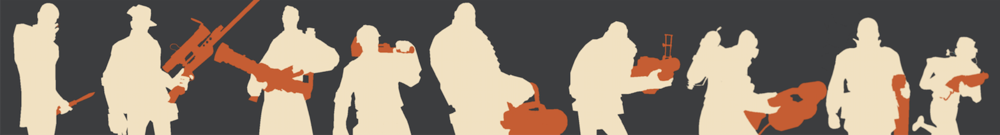
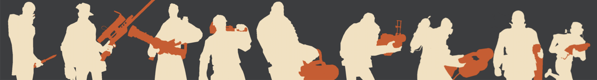
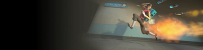
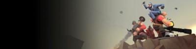

Team Fortress 2 is a team-based first person shooter released on October 10, 2007 by Valve. Players join team RED or BLU battling in different game modes including:
Payload: BLU team must escort a cartful of explosives through a series of checkpoints and into RED's base within a certain amount of time.
Capture the flag: features both RED and BLU bases, each containing its own Intelligence briefcase. The goal for both teams is to capture the enemy's Intelligence until they have reached the game's capture limit while preventing their enemy from achieving the same.

Control point: both teams start with two controlled points, and a central point starts out neutral. The team that captures all the control points wins.
King of Hill: focuses on a single control point at the center of the map, which is neutral and locked at the beginning of the round. Teams must make their way to the control point and capture it when it becomes available.
